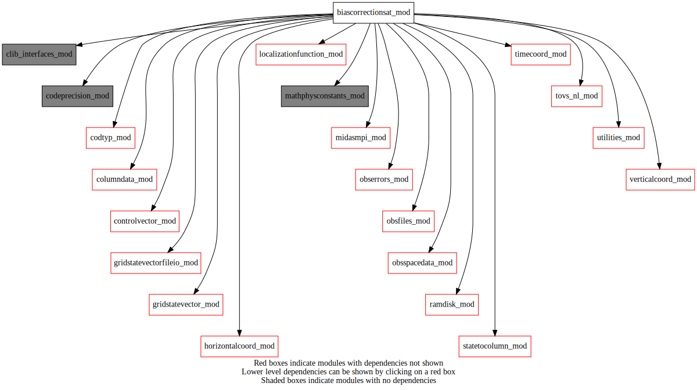
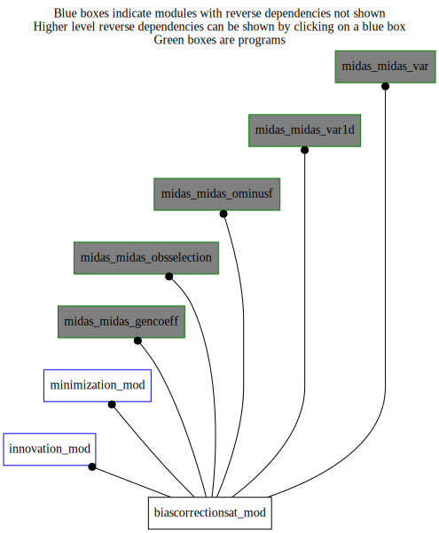

Dependency Diagrams:
 Direct Dependency Diagram¶
 Reverse Dependency Diagram¶
Description
MODULE biasCorrectionSat_mod (prefix=”bcs” category=’1. High-level functionality’)
- Purpose
Performs the variational bias correction for satellite radiance data
Quick access
- Variables
- Routines
bcs_applybiascorrection(),bcs_calcbias(),bcs_calcbias_ad(),bcs_calcbias_tl(),bcs_computepredictorbiases(),bcs_computeresidualsstatistics(),bcs_cvtocoeff(),bcs_cvtocoeff_ad(),bcs_do_regression(),bcs_dumpbiastosqliteafterthinning(),bcs_filterobs(),bcs_finalize(),bcs_getchannelindex(),bcs_getpredictors(),bcs_getradiosondeweight(),bcs_gettrialpredictors(),bcs_outputcvomppred(),bcs_readcoeffs(),bcs_readconfig(),bcs_refreshbiascorrection(),bcs_removebiascorrection(),bcs_removeoutliers(),bcs_setup(),bcs_updatecoeff(),bcs_writebias(),bcs_writecoeff(),getinitialidobsdata(),getobsfilename(),instrnameincoefffile(),instrnametocoefffilename(),read_bcif(),read_coeff(),satnameincoefffile()Needed modules
utilities_mod: MODULE utilities_mod (prefix=’utl’ category=’8. Low-level utilities and constants’)
ramdisk_mod: MODULE ramDisk_mod (prefix=’ram’ category=’8. Low-level utilities and constants’)
mathphysconstants_mod: MODULE MathPhysConstants_mod (prefix=’mpc’ category=’8. Low-level utilities and constants’)
obsspacedata_mod: MODULE obsSpaceData_mod (prefix=’obs’ category=’6. High-level data objects’)
controlvector_mod: MODULE controlVector_mod (prefix=’cvm’ category=’6. High-level data objects’)
midasmpi_mod: MODULE midasMpi_mod (prefix=’mmpi’ category=’8. Low-level utilities and constants’)
rttov_const(ninst())
tovs_nl_mod: MODULE tovs_nl (prefix=’tvs’ category=’5. Observation operators’)
timecoord_mod: MODULE timeCoord (prefix=’tim’ category=’7. Low-level data objects’)
columndata_mod: MODULE columnData_mod (prefix=’col’ category=’6. High-level data objects’)
codeprecision_mod: MODULE codePrecision_mod (prefix=’pre’ category=’8. Low-level utilities and constants’)
localizationfunction_mod: MODULE localizationFunction_mod (prefix=’lfn’ category=’2. B and R matrices’)
horizontalcoord_mod: MODULE HorizontalCoord_mod (prefix=’hco’ category=’7. Low-level data objects’)
verticalcoord_mod: MODULE verticalcoord (prefix=’vco’ category=’7. Low-level data objects’)
gridstatevector_mod: MODULE gridStateVector_mod (prefix=’gsv’ category=’6. High-level data objects’)
gridstatevectorfileio_mod: MODULE gridStateVectorFile_mod (prefix=’gio’ category=’4. Data Object transformations’)
statetocolumn_mod: MODULE stateToColumn (prefix=’s2c’ category=’4. Data Object transformations’)
codtyp_mod: MODULE codtyp_mod (prefix=’codtyp’ category=’8. Low-level utilities and constants’)
clib_interfaces_mod: MODULE clib_interfaces_mod (prefix=’’ category=’9. Global interfaces’)
obserrors_mod: MODULE obsErrors_mod (prefix=’oer’ category=’2. B and R matrices’)
fsqlite
obsfiles_mod: MODULE obsFiles_mod (prefix=’obsf’ category=’3. Observation input/output’)Types
- type biascorrectionsat_mod/unknown_type¶
- Type fields
% bcmode [character ]
% bctype [character ]
% channelnum [integer ]
% coeff (*) [real ,allocatable]
% coeff_fov (*) [real ,allocatable]
% coeff_nobs [integer ]
% coeff_offset (*) [real ,allocatable]
% coeffcov (*,*) [real ,allocatable]
% coeffincr (*) [real ,allocatable]
% coeffincr_fov (*) [real ,allocatable]
% isdynamic [logical ]
% numactivepredictors [integer ]
% predictorindex (*) [integer ,allocatable]
% stddev (*) [real ,allocatable]
- type biascorrectionsat_mod/unknown_type
- Type fields
% bhalfscanbias (*,*) [real ,allocatable]
% bminushalfscanbias (*,*) [real ,allocatable]
% chans (*) [struct_chaninfo ,allocatable]
% numchannels [integer ]
% numscan [integer ]
Variables
- biascorrectionsat_mod/bcs_mimicsatbcor [logical,public]¶
Subroutines and functions
- subroutine biascorrectionsat_mod/bcs_readconfig()¶
- Purpose
Read nambiassat namelist section
- Called from
- Call to
- subroutine biascorrectionsat_mod/bcs_setup()¶
- subroutine biascorrectionsat_mod/bcs_readcoeffs()¶
- Purpose
Fill the bias structure with read static and dynamic bias correction coefficient files
- Called from
- Call to
instrnametocoefffilename(),instrnameincoefffile(),satnameincoefffile(),tvs_isnamegeostationary(),read_coeff()
- subroutine biascorrectionsat_mod/bcs_computepredictorbiases(obsspacedata)¶
- Purpose
to compute predictor average
- Arguments
obsspacedata [struct_obs ,inout]
- Called from
- Call to
obs_getheaderindex(),obs_headelem_i(),tvs_isidburptovs(),obs_bodyelem_i(),bcs_getchannelindex(),bcs_getpredictors(),mmpi_allreduce_sumr8_2d(),utl_abort()
- subroutine biascorrectionsat_mod/bcs_calcbias(obsspacedata, columntrlontrllev)¶
- Purpose
to fill OBS_BCOR column of ObsSpaceData body with bias correction computed from read coefficient file
- Arguments
obsspacedata [struct_obs ,inout]
columntrlontrllev [struct_columndata ,inout]
- Called from
bcs_refreshbiascorrection(),midas_gencoeff,midas_ominusf,midas_obsselection- Call to
bcs_gettrialpredictors(),obs_getheaderindex(),obs_headelem_i(),tvs_isidburptovs(),obs_bodyelem_i(),obs_bodyelem_r(),bcs_getchannelindex(),bcs_getpredictors()
- subroutine biascorrectionsat_mod/bcs_dumpbiastosqliteafterthinning(obsspacedata)¶
- Purpose
to dump bias correction coefficients and predictors in dedicated sqlite files
- Arguments
obsspacedata [struct_obs ,inout]
- Called from
- Call to
tvs_getallidburptovs(),getobsfilename(),getinitialidobsdata(),obs_getheaderindex(),obs_headelem_i(),tvs_isidburptovs(),obs_mpilocal(),obs_headelem_r(),obs_bodyelem_i(),obs_bodyelem_r(),bcs_getchannelindex(),bcs_getpredictors(),utl_abort()
- subroutine biascorrectionsat_mod/bcs_computeresidualsstatistics(obsspacedata, prefix)¶
- Purpose
to compute residuals mean and standard deviation by intrument, channel and scan position
- Arguments
obsspacedata [struct_obs ,inout]
prefix [character ,in]
- Called from
- Call to
obs_getheaderindex(),obs_headelem_i(),obs_bodyelem_i(),bcs_getchannelindex(),obs_bodyelem_r(),mmpi_reduce_sumr8_2d(),utl_abort(),instrnametocoefffilename(),satnameincoefffile()
- subroutine biascorrectionsat_mod/bcs_removeoutliers(obsspacedata)¶
- Purpose
to remove outliers (too large OmF) from linear regression
- Arguments
obsspacedata [struct_obs ,inout]
- Called from
- Call to
obs_getheaderindex(),tim_getstepobsindex(),tim_getdatestamp(),obs_headelem_i(),obs_bodyelem_i(),bcs_getchannelindex(),obs_bodyelem_r(),mmpi_reduce_sumr8_2d(),utl_abort(),obs_bodyset_i()
- subroutine biascorrectionsat_mod/bcs_calcbias_tl(cv_in, obscolumnindex, obsspacedata, columntrlontrllev)¶
- Purpose
tl of bias computation (for varBC)
- Arguments
cv_in (*) [real ,in]
obscolumnindex [integer ,in]
obsspacedata [struct_obs ,inout]
columntrlontrllev [struct_columndata ,inout]
- Called from
- Call to
bcs_gettrialpredictors(),bcs_computepredictorbiases(),bcs_getradiosondeweight(),cvm_subvectorexists(),cvm_getsubvector(),bcs_cvtocoeff(),obs_getheaderindex(),obs_headelem_i(),tvs_isidburptovs(),obs_bodyelem_i(),bcs_getchannelindex(),bcs_getpredictors(),obs_bodyelem_r()
- subroutine biascorrectionsat_mod/bcs_gettrialpredictors(obsspacedata, columntrlontrllev)¶
- Purpose
get predictors from trial fields
- Arguments
obsspacedata [struct_obs ,inout]
columntrlontrllev [struct_columndata ,inout]
- Called from
- Call to
obs_getheaderindex(),obs_headelem_i(),tvs_isidburptovs(),col_getelem(),col_getnumlev(),col_getpressure(),col_getcolumn()
- subroutine biascorrectionsat_mod/bcs_cvtocoeff(cv_bias)¶
- Purpose
get coefficient increment from control vector
- Arguments
cv_bias (*) [real ]
- Called from
- subroutine biascorrectionsat_mod/bcs_getpredictors(predictor, headerindex, obsindex, chanindx, obsspacedata)¶
- Purpose
get predictors
- Arguments
predictor (numpredictors) [real ,out]
headerindex [integer ,in]
obsindex [integer ,in]
chanindx [integer ,in]
obsspacedata [struct_obs ,inout]
- Called from
bcs_computepredictorbiases(),bcs_calcbias(),bcs_dumpbiastosqliteafterthinning(),bcs_calcbias_tl(),bcs_calcbias_ad(),bcs_do_regression(),bcs_outputcvomppred()- Call to
- subroutine biascorrectionsat_mod/bcs_calcbias_ad(cv_out, obscolumnindex, obsspacedata)¶
- Purpose
bias computation adjoint (for varBC)
- Arguments
cv_out (*) [real ,in]
obscolumnindex [integer ,in]
obsspacedata [struct_obs ]
- Called from
- Call to
cvm_subvectorexists(),cvm_getsubvector(),obs_getheaderindex(),obs_headelem_i(),tvs_isidburptovs(),obs_bodyelem_i(),bcs_getchannelindex(),bcs_getpredictors(),obs_bodyelem_r(),bcs_cvtocoeff_ad()
- subroutine biascorrectionsat_mod/bcs_cvtocoeff_ad(cv_bias)¶
- Purpose
adjoint of control vector to coeff transfer (for varBC)
- Arguments
cv_bias (*) [real ,inout]
- Called from
- Call to
- subroutine biascorrectionsat_mod/bcs_writebias([cv_in])¶
- Purpose
to write bias increments and coefficients (varBC)
- Options
cv_in (*) [real ,in,]
- Called from
- Call to
cvm_subvectorexists(),cvm_getsubvector(),bcs_cvtocoeff(),bcs_writecoeff(),instrnametocoefffilename(),bcs_updatecoeff()
- subroutine biascorrectionsat_mod/bcs_updatecoeff(maxsat, maxpred, coeff_file, sats, chans, nsat, nchan, nfov, cinstrum[, updatecoeff_opt])¶
- Purpose
to read, and optionaly update and write out, the coeff files (varBC).
- Arguments
maxsat [integer ,in]
maxpred [integer ,in]
coeff_file [character ,in]
sats (maxsat) [character ,out] :: Satellite names
chans (maxsat,tvs_maxchannelnumber) [integer ,out] :: channel numbers
nsat [integer ,out] :: backgroud sat
nchan (maxsat) [integer ,out] :: number of channels
nfov [integer ,out]
cinstrum [character ,out] :: instrument (e.g. AMSUB)
- Options
updatecoeff_opt [logical ,in,]
- Called from
- Call to
- subroutine biascorrectionsat_mod/bcs_writecoeff()¶
- Purpose
write out the coeff files (regression case).
- Called from
- Call to
instrnameincoefffile(),satnameincoefffile(),utl_open_asciifile()
- subroutine biascorrectionsat_mod/bcs_removebiascorrection(obsspacedata[, family_opt])¶
- Purpose
to remove bias correction from OBS_VAR After the call OBS_VAR contains the uncorrected observation and OBS_BCOR is set to zero
- Arguments
obsspacedata [struct_obs ,inout]
- Options
family_opt [character ,in,]
- Called from
- Call to
- subroutine biascorrectionsat_mod/bcs_filterobs(obsspacedata)¶
- Purpose
to filter radiance observations to include into bias correction offline computation (same rules as in bgck.gen_table)
- Arguments
obsspacedata [struct_obs ,inout]
- Called from
- Call to
obs_getheaderindex(),obs_headelem_i(),codtyp_get_name(),tvs_mapsat(),tvs_mapinstrum(),obs_bodyelem_r(),tvs_isinstrumusingclw(),tvs_isinstrumusinghydrometeors(),obs_bodyelem_i(),bcs_getchannelindex(),obs_bodyset_i()
- subroutine biascorrectionsat_mod/bcs_applybiascorrection(obsspacedata, column[, family_opt])¶
- Purpose
to apply bias correction from OBS_BCOR to obsSpaceData column column. After the call obsSpaceData body column contains the corrected observation or O-F and OBS_BCOR is not modified.
- Arguments
obsspacedata [struct_obs ,inout]
column [integer ,in] :: obsSpaceData column
- Options
family_opt [character ,in,]
- Called from
bcs_refreshbiascorrection(),midas_ominusf,midas_obsselection- Call to
- subroutine biascorrectionsat_mod/bcs_refreshbiascorrection(obsspacedata, columntrlontrllev)¶
- Purpose
to apply bias correction from read coefficient file to OBS_VAR After the call OBS_VAR contains the corrected observation and OBS_BCOR is set to applied bias correction
- Arguments
obsspacedata [struct_obs ,inout]
columntrlontrllev [struct_columndata ,inout]
- Called from
- Call to
- subroutine biascorrectionsat_mod/bcs_getradiosondeweight(obsspacedata[, lmodify_obserror_opt])¶
- Purpose
initialize the weights to give more importance to data near radiosonde stations
- Arguments
obsspacedata [struct_obs ,inout]
- Options
lmodify_obserror_opt [logical ,in,]
- Called from
- Call to
hco_setupfromfile(),vco_setupfromfile(),gsv_allocate(),gio_readfromfile(),gsv_copy(),gsv_deallocate(),col_setvco(),obs_numheader(),col_allocate(),s2c_nl(),obs_getheaderindex(),obs_headelem_i(),tvs_isidburptovs(),col_getelem(),obs_bodyelem_i(),obs_bodyelem_r()
- subroutine biascorrectionsat_mod/bcs_do_regression(columntrlontrllev, obsspacedata)¶
- Purpose
compute the bias correction coefficients by linear regresion
- Arguments
columntrlontrllev [struct_columndata ,inout]
obsspacedata [struct_obs ,inout]
- Called from
- Call to
bcs_gettrialpredictors(),bcs_computepredictorbiases(),bcs_getradiosondeweight(),bcs_outputcvomppred(),obs_getheaderindex(),obs_headelem_i(),tvs_isidburptovs(),obs_bodyelem_i(),bcs_getchannelindex(),obs_bodyelem_r(),mmpi_reduce_sumr8_2d(),utl_abort(),bcs_getpredictors(),mmpi_reduce_sumr8_3d(),utl_pseudo_inverse()
- subroutine biascorrectionsat_mod/bcs_outputcvomppred(obsspacedata)¶
- Purpose
compute and output OmF-predictors covariance and correlation matrices
- Arguments
obsspacedata [struct_obs ,inout]
- Called from
- Call to
obs_getheaderindex(),obs_headelem_i(),tvs_isidburptovs(),obs_bodyelem_i(),bcs_getchannelindex(),obs_bodyelem_r(),bcs_getpredictors(),mmpi_reduce_sumr8_1d(),mmpi_reduce_sumr8_2d(),utl_abort(),mmpi_reduce_sumr8_3d(),utl_open_asciifile()
- subroutine biascorrectionsat_mod/bcs_finalize()¶
- Purpose
release allocated memory for the module
- Called from
- function biascorrectionsat_mod/instrnametocoefffilename(namein)¶
- Arguments
namein [character ,in]
- Return
nameout [character ]
- Called from
bcs_setup(),bcs_readcoeffs(),bcs_computeresidualsstatistics(),bcs_writebias()
- function biascorrectionsat_mod/instrnameincoefffile(namein)¶
- Arguments
namein [character ,in]
- Return
nameout [character ]
- Called from
bcs_setup(),bcs_readcoeffs(),bcs_updatecoeff(),bcs_writecoeff()
- function biascorrectionsat_mod/satnameincoefffile(namein)¶
- Arguments
namein [character ,in]
- Return
nameout [character ]
- Called from
bcs_setup(),bcs_readcoeffs(),bcs_computeresidualsstatistics(),bcs_updatecoeff(),bcs_writecoeff()
- subroutine biascorrectionsat_mod/read_bcif(bciffile, hspec, ncan, can, bcmode, bctype, npred, pred, global_opt, exitcode)¶
- Purpose
to read channel-specific bias correction (BC) information (predictors) for instrument from BCIF.
- Arguments
bciffile [character ,in]
hspec [logical ,in]
ncan [integer ,out]
can (tvs_maxchannelnumber) [integer ,out]
bcmode (tvs_maxchannelnumber) [character ,out]
bctype (tvs_maxchannelnumber) [character ,out]
npred (tvs_maxchannelnumber) [integer ,out]
pred (tvs_maxchannelnumber,numpredictorsbcif) [character ,out]
global_opt [character ,in]
exitcode [integer ,out]
- Called from
- Call to
- subroutine biascorrectionsat_mod/read_coeff(sats, chans, fovbias, coeff, nsat, nchan, nfov, npred, cinstrum, coeff_file, ptypes, ndata)¶
- Purpose
to read radiance bias correction coefficients file
- Arguments
sats (*) [character ,out] :: dim(maxsat), satellite names 1
chans (*,*) [integer ,out] :: dim(maxsat, maxchan), channel numbers 2
fovbias (*,*,*) [real ,out] :: dim(maxsat,maxchan,maxfov), bias as F(fov) 3
coeff (*,*,*) [real ,out] :: ‘)
nsat [integer ,out] :: 5
nchan (*) [integer ,out] :: dim(maxsat), number of channels 6
nfov [integer ,out] :: 7
npred (*,*) [integer ,out] :: dim(maxsat, maxchan), number of predictors !8
cinstrum [character ,out] :: string: instrument (e.g. AMSUB) 9
coeff_file [character ,in] :: 10
ptypes (*,*,*) [character ,out] :: dim(maxsat,maxchan,maxpred) 11
ndata (*,*) [integer ,out] :: dim(maxsat, maxchan), number of channels 12
- Called from
- Call to
- subroutine biascorrectionsat_mod/bcs_getchannelindex(obsspacedata, idsat, chanindx, indexbody)¶
- Purpose
to get the channel index (wrt bcif channels)
- Arguments
obsspacedata [struct_obs ,inout]
idsat [integer ,in]
chanindx [integer ,out]
indexbody [integer ,in]
- Called from
bcs_computepredictorbiases(),bcs_calcbias(),bcs_dumpbiastosqliteafterthinning(),bcs_computeresidualsstatistics(),bcs_removeoutliers(),bcs_calcbias_tl(),bcs_calcbias_ad(),bcs_filterobs(),bcs_do_regression(),bcs_outputcvomppred()- Call to
- function biascorrectionsat_mod/getobsfilename(codetype)¶
- Purpose
Return the part of the observation file name associated with the type of observation it contains.
- Arguments
codetype [integer ,in]
- Return
filename [character ]
- Called from
- Call to
- subroutine biascorrectionsat_mod/getinitialidobsdata(obsspacedata, obsfamily, idobs, iddata[, codetypelist_opt])¶
- Purpose
Compute initial value for idObs and idData that will ensure unique values over all mpi tasks
- Arguments
obsspacedata [struct_obs ,inout]
obsfamily [character ,in]
idobs [integer ,out]
iddata [integer ,out]
- Options
codetypelist_opt (*) [integer ,in,]
- Called from
- Call to
{kind=link}
{kind=link}